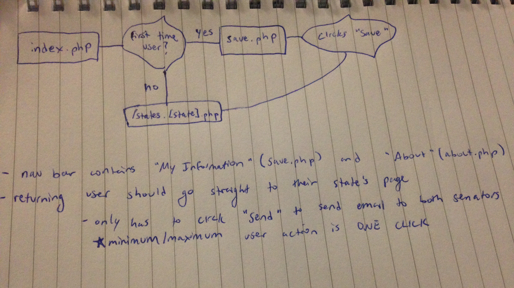

jrj85@cornell.edu • 914-924-8219
jrj85@cornell.edu • 914-924-8219

I built the first iteration of http://emailmysenator.com in a four day sprint during the summer of 2016. EmailMySenator was a direct response to the shootings of Alton Sterling and Philando Castile. The purpose of this project is to increase civic engagement by making it easier to contact your senators about increasing gun control and decreasing gun violence.
I began to feel frustrated about gun control right around the time when I was getting news updates every other day about gun violence. It was beginning to feel like shootings were mainstream. One of the few things I knew I could do as a regular citizen of the U.S. is email my senators about gun violence. However, I was discouraged from doing so as soon as I navigated to the senator contact page (http://www.senate.gov/senators/contact/senators_cfm.cfm). Below are screenshots of the three steps required to navigate to Senator Gillibrand's contact page.
Notice how each senator requires (slightly different) masses of information to be entered in every time you want to send the email. It takes a minimum of three clicks to even just get to the form--and then the user has to enter in a ton of information each time they want to send a letter! I also had no idea what to write in the body of the message, nor the inclination to rewrite the email every time I wanted to contact my senators about the same issue. I began to think of ways to improve this user experience in order to empower citizens to make a real difference in American politics. Enter my website.
My vision for this tool was to create a website where the user only has to input their information once, this information is saved and hereonin autopopulated, and a (fully editable) form letter is provided urging the senator to do something about gun violence. The user only has to press one button to send the same email every day.
I started by gathering requirements for the website. I knew from speaking to my peers (who were also frustrated by the contact form UX, who were not motivated to send emails to their senators) that the website needed to be easy to use. I also discovered that users liked the idea of having a form letter provided for them, but insisted that the letter be editable. Another demographic I wanted to target was the older generation. After speaking with some members of this user group, I decided to forgo the idea of using a database to store user information and instead only store information on permanent cookies on the browser. This meant that their information would be safe--i.e. there was no way someone could hack into a database to steal their information if their information simply wasn't available.
I created my first sketch of the website/user flow (see below). It was important that the user experience was as seamless and easy as possible. It was my goal to minimize the amount of time each user spends clicking on the website.

The first sketch of this website is below. I wanted to make the design as simple and easy to code as possible, because I wanted to get the website out as soon as I could. It was necessary for the success of the launch that EmailMySenator was released on the heels of increased interest in gun control; as a result, I gave myself a hard deadline of one week to complete the first iteration of the project.
I chose a color scheme of teal and a pink accent because it was vaguely synonymous with the colors of the American Flag.
I spent the first few days manually going through all 100 senator's contact forms to find out how the forms POST, what the input field names are, what the least required amount of information per senator was, and the best way to automate the process as best as possible. I was able to find the building blocks of each form's POST strings and URL. I filled out as much information as possible for the end user, including pre-setting the "message subject" and providing the user with a form letter.
I built EmailMySenator using HTML, CSS, JavaScript, and PHP. I used PHP and cURL to remotely submit each senator's contact form.
Over 600 people visited the website three weeks after deployment. The website is live, and can be found at http://emailmysenator.com.